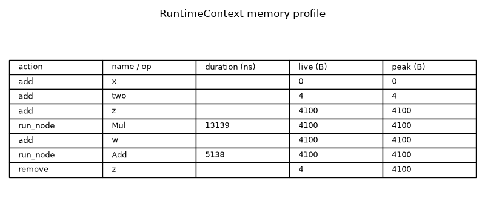
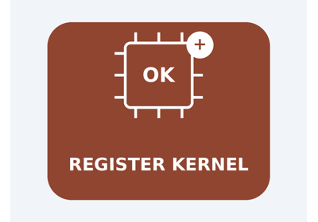

Note
Go to the end to download the full example code.
Profile the runtime memory of a model with the event log#
When a RuntimeContext runs a model with event logging enabled, it
records a RuntimeEvent for every tensor map mutation and every node
dispatch. Attaching a SimpleRawBufferAllocator to the context makes
each event additionally carry the allocator’s live footprint
(allocated_bytes, the total size of every buffer alive at that moment) and
its peak footprint (peak_bytes, the maximum ever reached). Together with
the wall-clock duration_ns of each node this turns the event log into a
per-node time-and-memory profile.
This example:
builds a small graph that materialises two intermediate activations (
MulthenAdd) so the allocator’s live memory grows and shrinks as nodes run,attaches a
SimpleRawBufferAllocatorto aReferenceEvaluatorand runs it withevents_enabled=Trueandrelease_intermediates=True,prints
RuntimeEvent.summary()for every recorded event — a one-line recap including the live and peak memory,isolates the per-node
run_nodeevents to read the duration and the allocator memory observed right after each node,renders a compact table of the memory profile.
from __future__ import annotations
import numpy as np
from onnx_light.onnx_lib import parser
from onnx_light.onnx.reference import ReferenceEvaluator
from onnx_light.onnx_py._onnxpykernels import runtime as _runtime
from onnx_light.tools import pretty_onnx
Build a small ONNX model#
The graph computes w = (x * two) + x. Both z = x * two and
w = z + x are intermediate activations the runtime has to hold in
memory while the graph runs.
model = parser.parse_model(
'<ir_version: 10, opset_import: ["" : 18]>'
"agraph (float[N] x) => (float[N] w) "
"<float two = {2.0}>"
"{"
" z = Mul(x, two)"
" w = Add(z, x)"
"}"
)
print(pretty_onnx(model))
opset: domain='' version=18
graph: name='agraph'
input: float[N] x
init: float[] two
0: Mul(x, two) -> z
1: Add(z, x) -> w
output: float[N] w
Attach an allocator and run with event logging#
SimpleRawBufferAllocator is a fixed-capacity pool: capacity is
the maximum number of buffers that may be alive at the same time (a generous
upper bound is fine — empty slots are cheap). Passing it to
ReferenceEvaluator routes the runtime’s buffer
storage through it, so every recorded event reports the live and peak memory.
release_intermediates=True frees each intermediate as soon as its last
consumer has run, which is exactly what makes the live footprint go down
again in the log.
w[:4] = [0. 3. 6. 9.]
Read the event log#
RuntimeEvent.summary() renders each event as a single line. The
mem= field is the allocator’s live footprint right after the action and
peak= is the largest footprint reached so far.
Recorded 7 event(s):
[add/input] 'x' mem=0B peak=0B
[add/initializer] 'two' mem=4B peak=4B
[add/intermediate] 'z' node#0 mem=4100B peak=4100B
[run_node/unknown] ai.onnx::Mul(x, two) node#0 took 13139ns executor#4/2 mem=4100B peak=4100B
[add/intermediate] 'w' node#1 mem=4100B peak=4100B
[run_node/unknown] ai.onnx::Add(z, x) node#1 took 5138ns executor#4/2 mem=4100B peak=4100B
[remove/unknown] 'z' mem=4B peak=4100B
Isolate the per-node memory profile#
The run_node events summarise the dispatch of each node: its op_type,
the duration_ns it took and the allocator memory observed right after it
ran. Filtering the log by action recovers just those entries.
Per-node time and memory profile:
Mul took 13139 ns live= 4100 B peak= 4100 B
Add took 5138 ns live= 4100 B peak= 4100 B
The allocator also exposes the peak directly#
The same peak is available on the allocator object itself, independently of the event log.
print(f"Allocator peak footprint: {allocator.peak_allocated_size} bytes")
Allocator peak footprint: 4100 bytes
Render the memory profile as a table#
A simple matplotlib figure doubles as the sphinx-gallery thumbnail and a compact recap of the recorded events, showing the live and peak memory next to each action.
import matplotlib.pyplot as plt # noqa: E402
rows = []
for ev in events:
d = ev.as_dict()
label = d["op_type"] if d["action"] == "run_node" else d["name"]
rows.append(
[
d["action"],
label,
str(d["duration_ns"]) if d["action"] == "run_node" else "",
str(d["allocated_bytes"]),
str(d["peak_bytes"]),
]
)
fig, ax = plt.subplots(figsize=(8, 1.6 + 0.3 * len(rows)))
ax.set_axis_off()
table = ax.table(
cellText=rows,
colLabels=["action", "name / op", "duration (ns)", "live (B)", "peak (B)"],
loc="center",
cellLoc="left",
colLoc="left",
)
table.auto_set_font_size(False)
table.set_fontsize(9)
table.scale(1.0, 1.3)
ax.set_title("RuntimeContext memory profile")
fig.tight_layout()
fig.savefig("plot_runtime_memory.png")

Total running time of the script: (0 minutes 0.213 seconds)
Related examples

Run a model with the runtime and inspect intermediate results


Replace a built-in kernel with a Python one and prove it ran
Gallery generated by Sphinx-Gallery
Example last updated
- Date:
2026-08-21